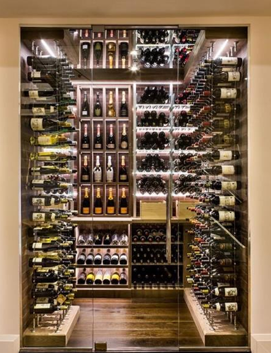

Na Vinheria Agnello, você encontra uma variedade de vinhos de vinícolas nacionais e internacionais, selecionados para diferentes paladares e ocasiões.

Descubra nossa seleção de vinhos, cuidadosamente escolhidos para transformar cada momento em uma experiência especial. Sabores, aromas e qualidade em cada garrafa.
| Produto | Características | Tipo |
|---|---|---|
| Vinho Tinto Cabernet Sauvignon | Um vinho encorpado com notas de frutas vermelhas e taninos suaves | Seco. |
| Vinho Branco Chardonnay | Leve e refrescante. Combina com peixes, frutos do mar e pratos leves. | Seco. |
| Espumante Brut | Refrescante e com presença de borbulhas. Indicado para comemorações, entradas e momentos especiais. | Seco/Doce |
| Vinho Rosé | Leve, fresco e frutado. Uma opção versátil para dias quentes, entradas e refeições leves. | Seco/Semisseco. |
| Vinho Doce | Apresenta maior percepção de doçura e pode acompanhar sobremesas ou ser apreciado sozinho. | Doce |
| Vinho Semisseco | Equilibra características doces e secas, sendo uma opção intermediária para diferentes paladares. | Semisseco |
| Vinho Fortificado | Possui pouca percepção de açúcar, com sabor mais equilibrado e adequado para acompanhar diversos pratos. | Fortificado |
| Vinho Raro | Possui maior teor alcoólico e sabor mais intenso. Pode ser servido como aperitivo ou acompanhando sobremesas. | Raro |
| Vinho de Maior Valor | Produto de maior exclusividade, podendo apresentar características diferenciadas de safra, região e produção. | Premium |
| Vinho de Safra Especial | Seleção destinada a clientes que procuram rótulos de maior valor e qualidade, com atenção especial à conservação. | Safra Especial |